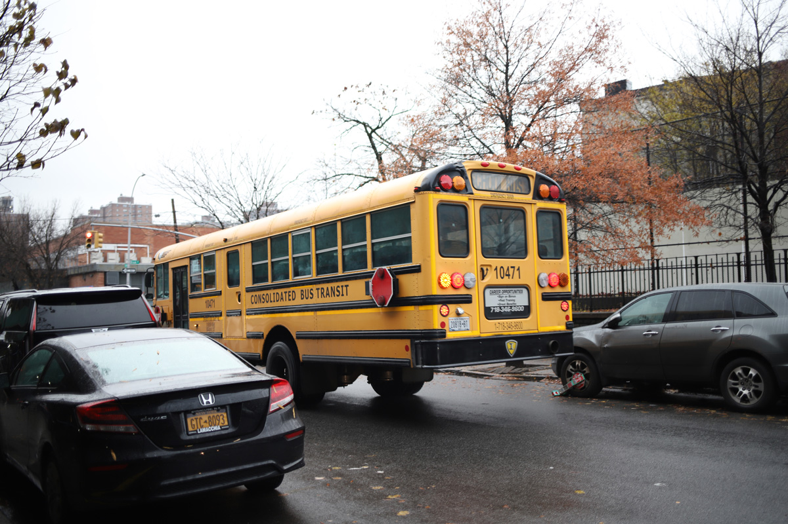
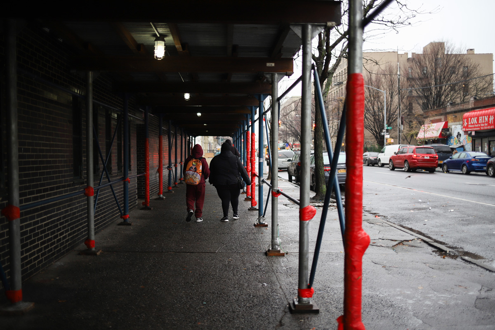

When Fahmida Reba started her first job as a school psychologist in the South Bronx last year, she was surprised by how many parents were worried about reading levels.
Parents in P.S 30x Wilton in Mott Haven—concerned that their third-grade children are reading at the first-grade level—told her they fear the lasting impact of remote learning.
“Reading affects everything,” she said. “If you're having trouble with reading, then you're going to struggle in all areas.”
New York City students have indeed struggled academically.
According to the city Department of Education, reading scores dropped sharply for Bronx students in grades three to five this year—40% of third graders scored proficient in reading in 2019 compared to 30% in 2022. At P.S. 30x Wilton, scores were much lower than the borough’s average — only 15.9% of students passed the reading portion of the exam, and 12.7% of students passed the math portion. By comparison, 78% of students at P.S. 158 Bayard Taylor on the Upper East Side of Manhattan were proficient in reading and 77.5% were in math.
This year was the first time students were tested since the pandemic began. Last year, many students in New York City did not take the test because parents were less inclined to send their children to school for it. The results showed the pandemic’s effect on students in stark terms. Their academic progress slowed when schools moved to remote classes, particularly among Hispanic students and those from low-income families.
As has been the case for years, the latest test results showed significant disparities in Bronx between white and Asian American students and their Black and Hispanic peers. Among Asian and white students, 54.1% and 49.5% of students in third grade were proficient in reading this year. That’s an 7.5 percentage point and a 2.5 percentage point decrease , respectively. Meanwhile, 26.6% of Black students scored proficient this year in reading. Among Hispanic students, the number is 26%. In the case of scores far lower than Asians and whites, their decline was even greater for Hispanic and black students, that’s respectively 9.1 percentage point and a 7.6 percentage point decrease.
“I saw the difference since COVID. Everything is slow,” said Aliyah Cook, 26, whose 7-year-old son attends P.S. 30x Wilton. She said remote learning was less efficient than being in person. “I have to spend more time to help my son study at home.”
Cook is still determining if she wants to send her second child to the same school next year and is even considering moving. She said she has problems with the neighborhood’s safety and education options.
The pandemic exacerbated existing problems within the South Bronx. In 2020, the borough had the highest unemployment rate in the city. It’s also the city’s poorest borough, with more than 24% of its residents living below the poverty level. As of 2021, one in seven Bronx students was experiencing homelessness, according to the nonprofit Advocates for Children.
Clarisa Alayeto, program coordinator for Dream Charter Schools in the Bronx, said many families in her school are dealing with tough circumstances that don’t allow them to be active in their children’s education. There are also language barriers and basic needs that have gone unmet.
“A lot of our kids have parents in the criminal justice system. A lot of our kids are dealing with not having heat, hot water,” Alayeto said. “A lot of our kids are in shelters. So there's so many things to factor in when we talk about how do we get our kids to perform or close the gap.”
At P.S. 30x Wilton, Reba said students struggling with math and reading are now receiving individual tutoring or studying in small groups to make up for learning loss. Some students are also able to get the extra services they missed out in the pandemic, like speech and occupational therapy.
Students in New York City will take the test again next spring. With more time in the classroom this year, Natasha Atkins, executive director of the Bronx-based nonprofit Hunts Point Alliance for Children, believes things can turn around.
“We'll have to see if the test scores will increase, but I am hopeful,” she said. “I am hopeful.”